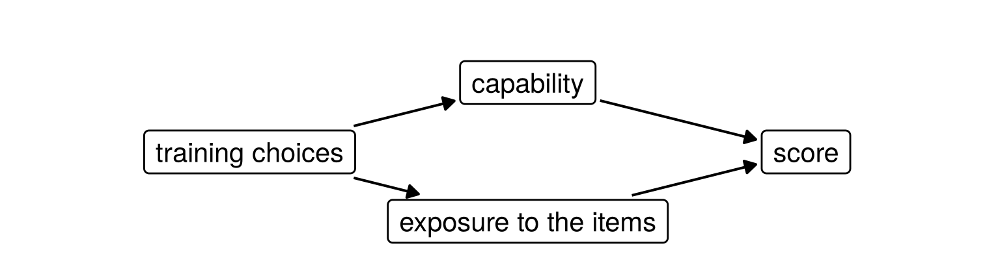
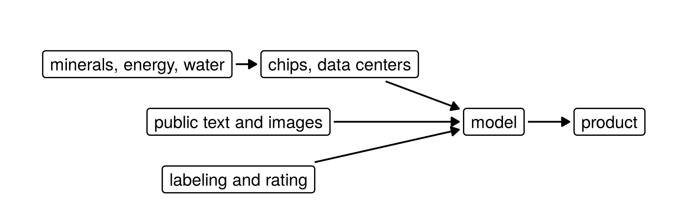

Ethics of AI
Joshua Loftus
The lenses
- Goal selection. What are we optimizing or predicting?
- Data selection. Who is in the data?
- Honest reporting. Which comparison gets reported?
- Justice. Who bears the error?
- Ownership. You have to choose, so choose, and defend it.
- Leverage. What can be changed, and how?
Each ends with the same two words: and why?
Week 9
Part 1: Where AI came from
Part 2: What a benchmark measures
Part 3: How sure, and which score
Part 4: What it is made of
Part 5: Who gets the payoff
Warm-up
You were asked to bring your top questions about the ethics of AI.
Write down your top question. What evidence would help answer it?
Part 1: Where AI came from
A test in place of a question
Turing (1950) opens with a question:
“I propose to consider the question, ‘Can machines think?’”
He then replaces it with a test he can describe: can a machine, exchanging typed messages with a questioner, be mistaken for a person? He calls it the imitation game.
In 1955 four researchers proposed “a 2 month, 10 man study” of artificial intelligence, to be held at Dartmouth College in the summer of 1956. They thought a selected group could make a significant advance on one or more of its problems in a summer.
Turing (1950), “Computing Machinery and Intelligence,” Mind 59(236), 433–460, page 433. McCarthy, Minsky, Rochester and Shannon, “A Proposal for the Dartmouth Summer Research Project on Artificial Intelligence,” 31 August 1955; reprinted in AI Magazine 27(4), 2006, 12–14, https://doi.org/10.1609/aimag.v27i4.1904.
ELIZA and the Lighthill report
ELIZA (Weizenbaum, 1966) answered typed sentences. It looked for a keyword, took the sentence apart by a rule attached to that keyword, and put a reply together by another rule. The rules were a script that a person wrote.
Weizenbaum’s introduction: once a program’s workings are explained, “its magic crumbles away”.
Lighthill (1973), for the UK’s Science Research Council, set results against claims. In no part of the field, he wrote, had discoveries “produced the major impact that was then promised”.
Weizenbaum (1966), “ELIZA: A Computer Program for the Study of Natural Language Communication Between Man and Machine,” Communications of the ACM 9(1), 36–45, https://doi.org/10.1145/365153.365168, page 36. Lighthill (1973), “Artificial Intelligence: A General Survey,” in Artificial Intelligence: a paper symposium, Science Research Council, https://www.aiai.ed.ac.uk/events/lighthill1973/lighthill.pdf, the section “Past disappointments”.
Rules fitted to data
2012: a neural network trained on labeled images wins the ImageNet competition, with a top-5 error of 15.3% against 26.2% for the next entry.
2017: the transformer, “a new simple network architecture” for sequences of words.
30 November 2022: ChatGPT is released as a free research preview.
A language model is trained to predict the next word in text that people wrote. A chatbot is then tuned further, using people’s rankings of its answers.
The rules are no longer written by a person. They are fitted to data that people produced.
Krizhevsky, Sutskever and Hinton (2012), “ImageNet Classification with Deep Convolutional Neural Networks,” Advances in Neural Information Processing Systems 25, 1097–1105. Vaswani, Shazeer, Parmar, Uszkoreit, Jones, Gomez, Kaiser and Polosukhin (2017), “Attention Is All You Need,” https://arxiv.org/abs/1706.03762. OpenAI, “Introducing ChatGPT,” 30 November 2022, https://openai.com/blog/chatgpt.
Levels of abstraction
| level | the person writes | the rest is filled in by |
|---|---|---|
| machine code | every instruction, as numbers | nothing |
| assembly | every instruction, by name | an assembler |
| Fortran (1957) | formulas and loops | a compiler |
| libraries, scripting | calls to other people’s code | interpreters, libraries |
| a request in English | what is wanted | a language model |
At each level the person writes less and the machine fills in more. The computer is still executing instructions.
An “agent” is a program that runs a model in a loop. Someone gave the instructions, and someone answers for them.
Where the comparison stops: a compiler is specified and repeatable. A model is learned and sampled, so it has to be measured.
Backus, Beeber, Best, et al. (1957), “The FORTRAN automatic coding system,” Proceedings of the Western Joint Computer Conference, 188–198.
Part 2: What a benchmark measures
A higher score
Model A scores higher than model B on a benchmark named for reasoning.
What do you need to know before you believe that A reasons better than B? Write down as much as you can in one minute.
Score and capability
\(Y\): the score, the share of items answered correctly. \(Y^*\): the capability the benchmark is named for.
Bean et al. (2025) reviewed 445 benchmarks for language models:
| of the 445 benchmarks | share |
|---|---|
| define the phenomenon they measure | 78.2% |
| of those definitions, contested | 47.8% |
| give evidence that the score measures the intended construct | 53.4% |
| compare models with a human baseline | 32.4% |
| use uncertainty estimates or statistical tests | 16.0% |
The review codes what each paper reports. On the first row, the papers coded twice got the same answer 53.7% of the time, little better than chance (Brennan–Prediger kappa 0.073).
Bean, Kearns, Romanou, et al. (2025), “Measuring what matters: Construct validity in large language model benchmarks,” NeurIPS 2025 Datasets and Benchmarks Track, https://arxiv.org/abs/2511.04703.
New items
A benchmark of grade-school mathematics problems is public. Researchers write new problems by the same recipe. People solve the new problems at about the same rate as the old ones.
One model scores 8 points lower on the new problems.
Give two explanations for the 8 points. What would you measure to tell them apart?
Zhang, Da, Lee, et al. (2024), “A careful examination of large language model performance on grade school arithmetic,” NeurIPS 2024, https://arxiv.org/abs/2405.00332. The authors work at a company that sells training data.
The gap between two scores
Old items: \(n_1\) of them, share correct \(\hat p_1\). New items: \(n_2\), share correct \(\hat p_2\).
\[ \hat p_1 - \hat p_2, \qquad \text{standard error} \;\; \sqrt{\frac{\hat p_1 (1 - \hat p_1)}{n_1} + \frac{\hat p_2 (1 - \hat p_2)}{n_2}} \]
With accuracy near 0.8 and 1,200 items in each set, the standard error is 1.6 points. A gap of 8 points is about 5 standard errors. A gap of 2 points is about 1.
Zhang et al.: gaps of up to 8 points for some models, and little to no evidence of a gap for the frontier models. The gap is larger for models that more readily reproduce the old problems. The authors weigh this against indirect routes: developers collecting similar data, or choosing among versions of a model by the benchmark score.
Zhang et al. (2024), as above.
Conditioning or intervening
“A scores higher than B” compares two models as they are. Is that conditioning or intervening? In the new-items study, what was intervened on?
Part 3: How sure, and which score
A larger benchmark
A benchmark reports a model’s score with a 95% interval, from the usual formula for a mean over \(n\) items.
Each answer is graded by another model: one prompt, one judge, one run.
The benchmark grows from 25 items to 400. The interval is now four times narrower.
Does the interval now contain the truth more often, less often, or as often as before? Commit to one.
Hidden error
\[ \text{score} = \theta + B + \bar\varepsilon, \qquad \mathrm{Var}(\bar\varepsilon) = \frac{\sigma^2}{n}, \qquad \mathrm{Var}(B) = \tau^2 \]
\(B\) is drawn once for the whole run and shared by every item: the prompt, the judge, the settings.
\[ \mathrm{Var}(\text{score}) = \frac{\sigma^2}{n} + \tau^2, \qquad \text{naive standard error:} \;\; \frac{\sigma}{\sqrt n} \]
Let \(r\) be the naive standard error divided by the true one. With normal errors, the naive 95% interval contains \(\theta\) with probability \(2\,\Phi(1.96\, r) - 1\).
If the naive standard error is half the true one, the coverage is 67%.
Coverage and the number of items

Messing (2026), simulating with variance estimates from a real benchmark: the naive interval contains the truth 42% of the time at 25 items and 11% at 400. The curve fixes \(\tau^2 / \sigma^2\) by the 42%; it then gives the 11%.
Messing (2026), “Hidden Measurement Error in LLM Pipelines Distorts Annotation, Evaluation, and Benchmarking,” preprint, https://arxiv.org/abs/2604.11581; the two figures are from his post of 17 November 2026, https://solomonmg.github.io/blog/hidden-measurement-error-llm-evals/. Not peer reviewed.
Private versions
On Chatbot Arena, a public leaderboard, a provider could test private versions of a model and publish one. Meta tested 27 in the month before one release.
Two copies of the same model, entered as two separate models, scored 1052 and 1069. Four other models were ranked between them.
A provider tests \(K\) private versions that are in truth equally good, and publishes the best score.
By how much does the published score overstate, on average? What does it depend on?
Singh, Nan, Wang, et al. (2025), “The leaderboard illusion,” NeurIPS 2025, https://arxiv.org/abs/2504.20879, section 3.3 and Figure 9. Several of the authors work at Cohere, which competes on the leaderboard.
The best of \(K\)
Version \(k\) scores \(\mu + \sigma Z_k\), with the \(Z_k\) independent standard normals.
\[ E\Big[\max_k \,(\mu + \sigma Z_k)\Big] = \mu + \sigma\, m_K \]
| \(K\) | 2 | 10 | 27 | 50 |
|---|---|---|---|---|
| \(m_K\) | 0.56 | 1.54 | 2.00 | 2.25 |
With 27 equally good versions, the published score is \(2\sigma\) above the truth on average.
The overstatement depends on \(\sigma\) and on \(K\). Fresh votes on the published version shrink it: the best of \(K\) was partly lucky, and the luck is not in the new votes.
The arena’s operators put the gain at “around +11 Elo after 50 tests and 3000 votes”, falling to zero with fresh votes.
Arena Team, “Our Response to ‘The Leaderboard Illusion’ Writeup,” 9 May 2025, updated 13 June 2025, https://arena.ai/blog/our-response. Singh et al. (2025), as above.
Part 4: What it is made of
The supply chain

Creating data takes resources. Someone pays to count, to record, and to keep.
Who benefited from this chain being invisible?
Crawford and Joler (2018), “Anatomy of an AI System: The Amazon Echo as an anatomical map of human labor, data and planetary resources,” AI Now Institute and Share Lab, https://anatomyof.ai. Crawford (2021), Atlas of AI: Power, Politics, and the Planetary Costs of Artificial Intelligence, Yale University Press. Gray and Suri (2019), Ghost Work: How to Stop Silicon Valley from Building a New Global Underclass, Houghton Mifflin Harcourt.
Text as a commons
A model is trained on writing that people made public: forum answers, encyclopedia articles, code, news. Each piece is small; the collection is the resource.
The collective frame: one person’s data reveal information about other people (Acemoglu et al., 2022), and individual consent cannot protect interests of that kind (Viljoen, 2021). What is a group of contributors owed, and who can speak for it?
The individual frame: each author’s consent, credit or payment, for their own text.
The question here is what is fair. What the law says is a separate question.
Acemoglu, Makhdoumi, Malekian, et al. (2022), “Too much data: Prices and inefficiencies in data markets,” American Economic Journal: Microeconomics 14(4), 218–256, https://doi.org/10.1257/mic.20200200. Viljoen (2021), “A relational theory of data governance,” Yale Law Journal 131(2), 573–654, https://www.yalelawjournal.org/feature/a-relational-theory-of-data-governance.
Stack Overflow after ChatGPT
Stack Overflow is the main public question-and-answer site for programmers.
Six months after ChatGPT’s release, posting on Stack Overflow was about 25% lower than the comparison sites predict. The comparison sites: Russian- and Chinese-language programming forums, where ChatGPT was harder to reach, and mathematics forums, where it was less capable.
What must be true of the comparison forums for 25% to be the effect of ChatGPT?
del Rio-Chanona, Laurentsyeva and Wachs (2024), “Large language models reduce public knowledge sharing on online Q&A platforms,” PNAS Nexus 3(9), pgae400, https://doi.org/10.1093/pnasnexus/pgae400.
The comparison forums
The 25% is the effect of ChatGPT if
- without ChatGPT, posting on Stack Overflow would have changed as it did on the comparison forums, and
- the comparison forums were not themselves affected.
Some users of the comparison forums could reach ChatGPT anyway. If their posting fell too, 25% is too small, and the authors treat it as a lower bound.
The authors describe a public good whose content partly feeds privately owned models that substitute for it.
del Rio-Chanona et al. (2024), as above.
Wikipedia
Wikipedia’s views and edits did not fall in aggregate (Reeves et al., 2025).
Newly created, popular articles whose content overlaps with ChatGPT lost views (Lyu et al., 2025).
Reeves, Yin and Simperl (2025), “Exploring the impact of ChatGPT on Wikipedia engagement,” Collective Intelligence, https://doi.org/10.1177/26339137251372599. Lyu, Siderius, Li, et al. (2025), “Wikipedia contributions in the wake of ChatGPT,” Companion Proceedings of the ACM Web Conference 2025, https://doi.org/10.1145/3701716.3715543.
Owed, and to whom
A question for the class this week:
A model was trained on writing that people made public. Is anything owed for it, and to whom?
The individual frame asks, author by author: consent, credit, payment, a way to opt out.
The collective frame asks, for the group: support for the sites that hold the writing, a say in how the collection is used, a share of what is made from it.
Pay for labeling
OpenAI’s contracts paid Sama, an outsourcing firm in Kenya, $12.50 an hour per worker to label graphic text. The labelers took home $1.32 to $1.44 an hour; Sama disputed the figures (Perrigo, 2023).
In a randomized evaluation run with Sama, training with a job referral raised applicants’ earnings by about 37 to 40% over applicants not offered them (Atkin et al., 2021).
Fieldwork at three Sama centers in Kenya and Uganda found low wages, insecure work and tightly disciplined management (Muldoon et al., 2025).
Which of the three comparisons answers “is it fair”? Why?
Perrigo (2023), “Exclusive: OpenAI used Kenyan workers on less than $2 per hour to make ChatGPT less toxic,” TIME, 18 January 2023, https://time.com/6247678/openai-chatgpt-kenya-workers/. Atkin, Schoar and Wahnschafft (2021), Evaluating Sama’s training and job programs in Nairobi, Kenya, research report, J-PAL, https://www.povertyactionlab.org/media/file-research-paper/evaluating-samas-training-and-job-programs-nairobi-kenya. Muldoon, Cant, Graham, et al. (2025), “The poverty of ethical AI: Impact sourcing and AI supply chains,” AI & Society 40(2), 529–543, https://doi.org/10.1007/s00146-023-01824-9.
Requesters and workers
Amazon Mechanical Turk is a platform for small paid online tasks, such as labeling data. Requesters post the tasks. From the logs of 2,676 workers and 3.8 million tasks:
The average requester pays more than $11 an hour.
The median worker earns about $2 an hour.
Both are true of the same data. How?
Hara, Adams, Milland, et al. (2018), “A data-driven analysis of workers’ earnings on Amazon Mechanical Turk,” Proceedings of the 2018 CHI Conference on Human Factors in Computing Systems, paper 449, https://doi.org/10.1145/3173574.3174023.
Requesters or hours of work
Invented numbers. Nine requesters pay $12 an hour and post 1 hour of work each. One requester pays $1 an hour and posts 91 hours.
\[ \begin{aligned} \text{average over requesters:} \quad & \frac{9 \times 12 + 1 \times 1}{10} = 10.90 \\[4pt] \text{average over hours of work:} \quad & \frac{9 \times 12 + 91 \times 1}{100} = 1.99 \end{aligned} \]
Hara et al.: “lower-paying requesters post much more work”.
A worker’s hour also includes time that no requester pays for: searching for tasks, and work that is rejected.
An average answers a question about the units it is taken over.
Hara et al. (2018), as above.
Part 5: Who gets the payoff
Payoff outside the tech sector
Slok (2026): revenue per worker and profit margins are rising for the “Magnificent 7” and flat for the other 493 firms in the S&P 500.
Nearly 9,000 executives in seven countries, summer 2026 (Yotzov et al.):
- 78% of firms use AI, and 2% of firms account for over half of the spending;
- essentially no net effect on employment at their firms over three years;
- 0.2% a year added to labor productivity growth, and 0.6% a year expected.
If there is a gain, who receives it?
Slok (2026), “No Signs of AI Payoff Outside the Tech Sector,” The Daily Spark, Apollo, 24 October 2026, https://www.apollo.com/wealth/insights-news/insights/daily-spark/no-signs-of-ai-payoff-outside-the-tech-sector. Yotzov, Barrero, Bloom, et al. (2026), “Firm Data on AI,” NBER Working Paper 34836, revised October 2026, https://doi.org/10.3386/w34836. Not peer reviewed.
Revenue per worker
\[ \text{revenue per worker} = \frac{R}{L} \]
Give two ways \(R/L\) can rise. In each, who receives the gain: customers, workers or owners? What would you look at to tell which one happened?
One firm and an open market
Inside one firm (Brynjolfsson, Li and Raymond, 2025): 5,172 customer-support agents, with an AI assistant introduced in stages. Issues resolved per hour rose 15% on average and about 30% for less experienced agents. The most skilled agents gained little. The assistant appears to spread the practices of the firm’s best agents, and the authors ask whether workers should be compensated for the data that train such systems.
On an open platform (Hui, Reshef and Zhou, 2024): writing freelancers had fewer jobs and lower earnings after ChatGPT’s release than freelancers in less exposed work.
Brynjolfsson, Li and Raymond (2025), “Generative AI at work,” Quarterly Journal of Economics 140(2), 889–942, https://doi.org/10.1093/qje/qjae044. Hui, Reshef and Zhou (2024), “The short-term effects of generative artificial intelligence on employment: Evidence from an online labor market,” Organization Science 35(6), 1977–1989, https://doi.org/10.1287/orsc.2023.18441.
Who paid, who gains
In pairs.
If the payoff stays where it is now, who paid for it?
If it spreads, who receives it? Do the people in Part 4, who wrote the text and labeled the data, receive any of it?
A report with errors
In 2025 Deloitte Australia delivered a 237-page report to a government department, for A$440,000.
The report contained a fabricated quotation from a federal court judgment and references to research that does not exist. Deloitte agreed to repay the final installment of its fee. The revised report disclosed that a language model had been used in writing it.
The tool executed instructions. People wrote the request, accepted the output and put the firm’s name on it.
McGuirk (2025), “Deloitte to partially refund Australian government for report with apparent AI-generated errors,” Associated Press, 7 October 2025, https://www.bnnbloomberg.ca/business/artificial-intelligence/2025/10/07/deloitte-to-partially-refund-australian-government-for-report-with-apparent-ai-generated-errors/. Dhanji (2025), “Deloitte to pay money back to Albanese government after using AI in $440,000 report,” The Guardian, 6 October 2025.
You sign the report
You are an analyst. A tool chose the data cleaning steps and the model for an analysis, and wrote the first draft of the report. Your name goes on it.
Alone, in writing. What do you owe the reader before you sign? Say what you would check, what you would disclose, and why.
Lenses this week
- Goal selection. What are we optimizing or predicting? A benchmark’s name, and what its items measure.
- Data selection. Who is in the data? Whose writing, whose labeling.
- Honest reporting. Which comparison gets reported? The naive interval. The best of \(K\). The requester’s average or the worker’s.
- Justice. Who bears the error? Labelers, freelancers.
- Ownership. You have to choose, so choose, and defend it. You sign the report.
- Leverage. What can be changed, and how? More items leave \(\tau^2\) alone. Fresh votes remove the luck.
Left to the reading: learning, chatbots, energy.